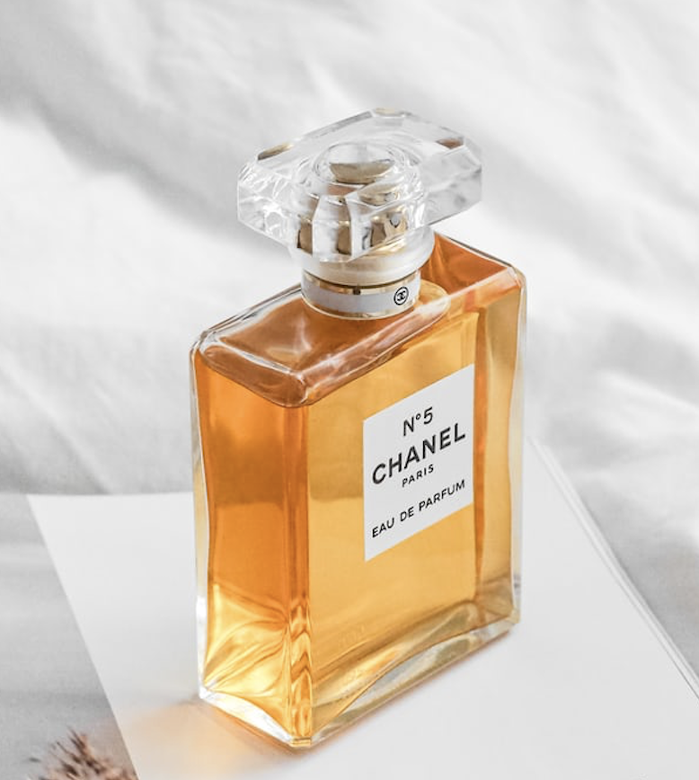
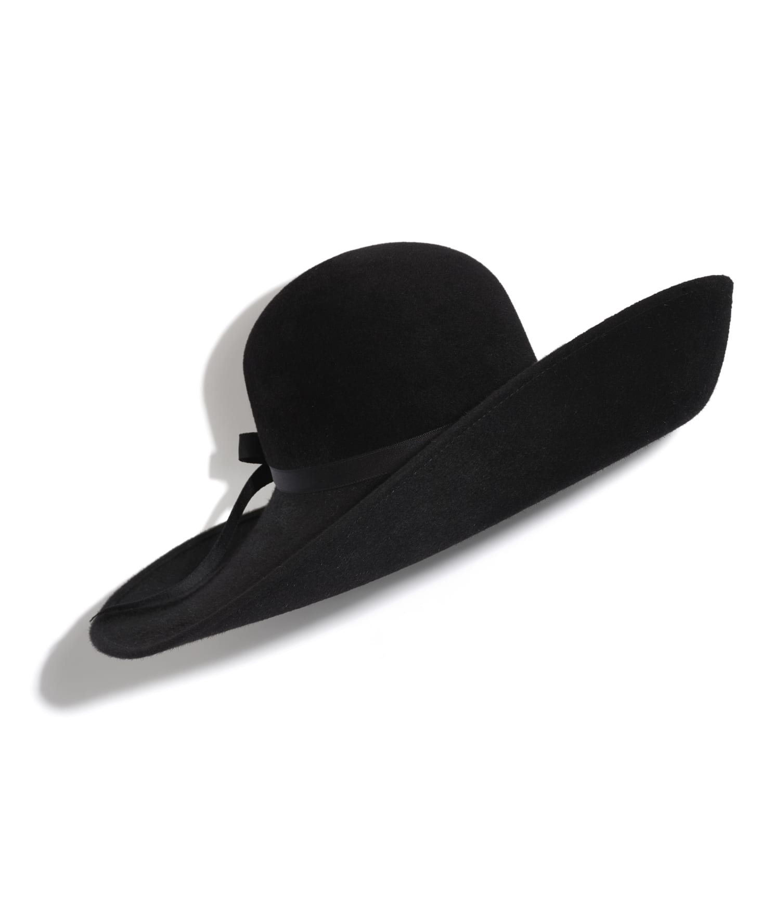
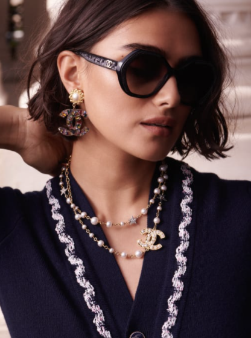
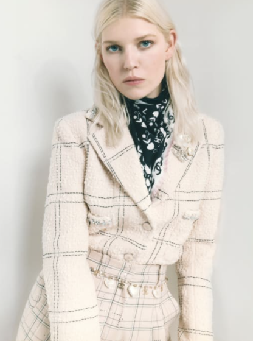
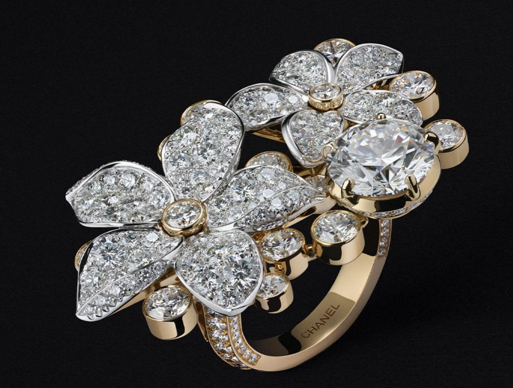
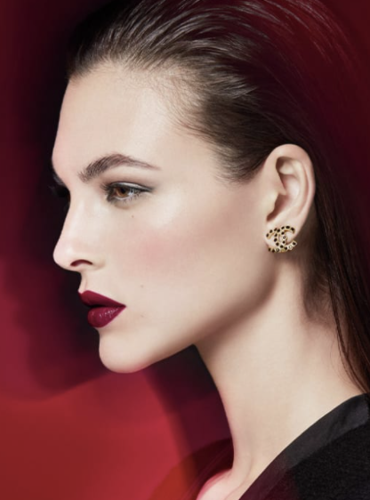
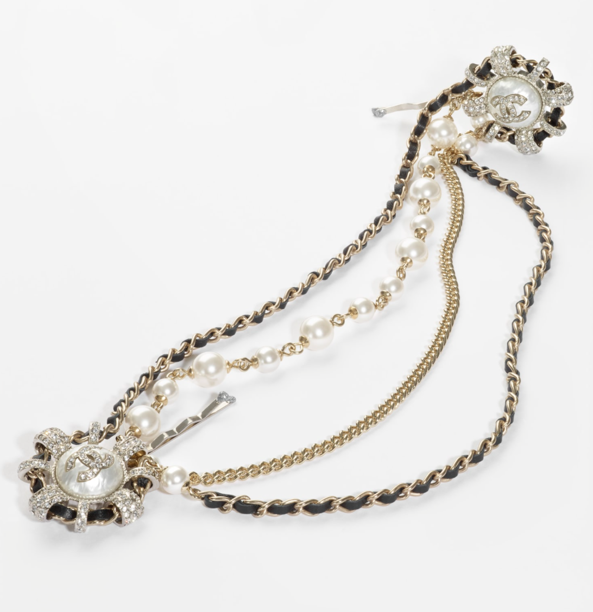
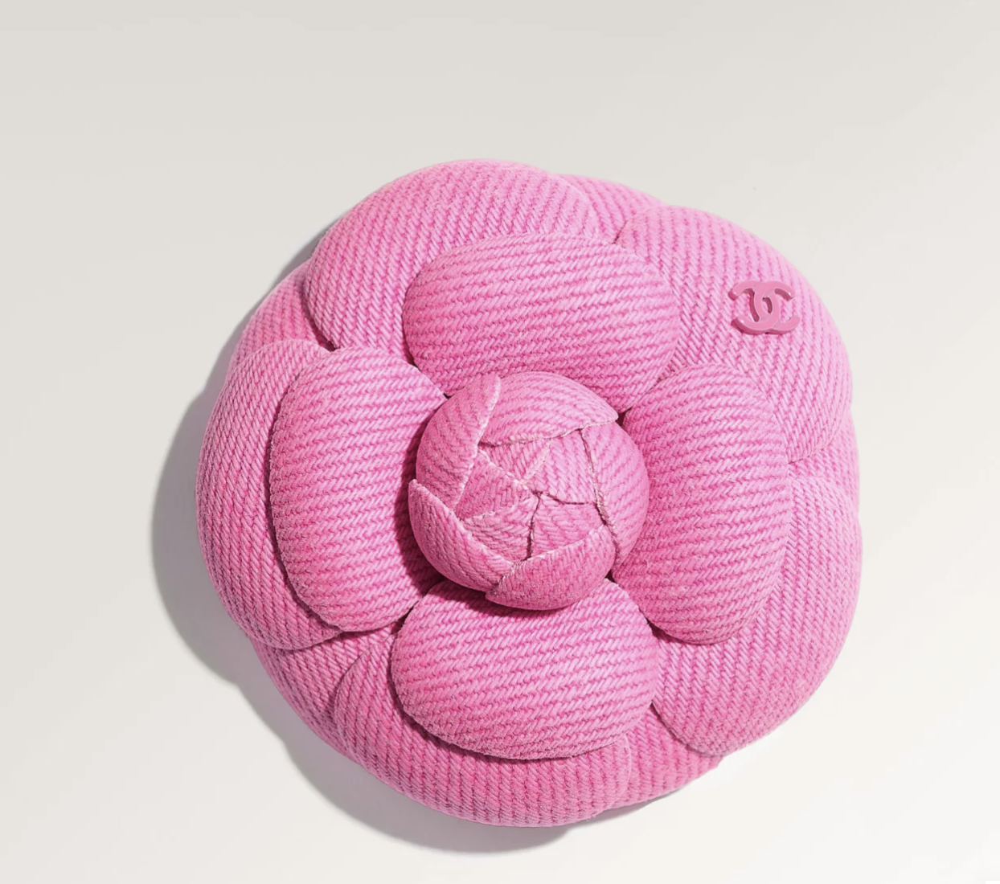

Gabrielle Bonheur "Coco" Chanel was a French fashion designer and businesswoman. The founder and namesake of the Chanel brand, she was credited in the post-World War I era with popularizing a sporty, casual chic as the feminine standard of style, replacing the "corseted silhouette" that was dominant beforehand. She is the only fashion designer listed on Time magazine's list of the 100 most influential people of the 20th century. A prolific fashion creator, Chanel extended her influence beyond couture clothing, realizing her aesthetic design in jewellery, handbags, and fragrance. Her signature scent, Chanel No. 5, has become an iconic product, and Chanel herself designed her famed interlocked-CC monogram, which has been in use since the 1920s. During the German occupation of France during World War II, Chanel was criticized for being too close to the German occupiers to boost her professional career; one of Chanel's liaisons was with a German diplomat, Baron (Freiherr) Hans Günther von Dincklage.[5][6] After the war, Chanel was interrogated about her relationship with von Dincklage, but she was not charged as a collaborator due to intervention by Churchill.